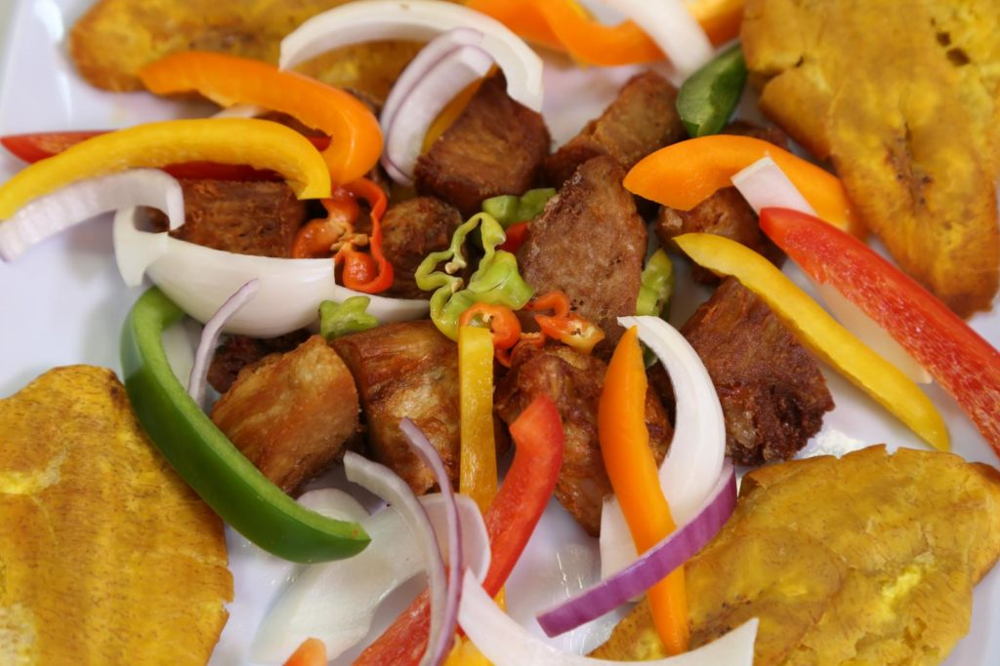

La cuisine haïtienne tire ses racines de plusieurs styles culinaires (le style français, le style africain, le style taïno et le style espagnol).
Les principaux ingrédients utilisés par les haïtiens sont les légumes, les viandes, le riz et la farine de maïs. Les poivrons et les herbes sont souvent utilisés pour renforcer la saveur du plat. Les plats ont tendance à être assaisonnés généreusement
La cuisine haïtienne à un goût unique qui sait satisfaire les personnes à la recherche de saveurs.

Délices gastronomiques des Caraïbes: 8 plats typiques haïtiens à goûter
1. Macaronis au gratin (macaronis au fromage au four) Source: Photo by user [puamelia] used under CC BY-SA 2.0 ...
2. Poulet aux noix (poulet aux noix de cajou) ...
3. Lambi (conque cuite) ...
4. Griyo (porc frit) ...
5. Pain de maïs ...
6. Mayi Moulen ak Zepina (semoule de maïs aux épinards) ...
7. Labouyi Ble (bouillie de blé bulgur) ...
8. Lalo Legume (feuilles de jute) ...